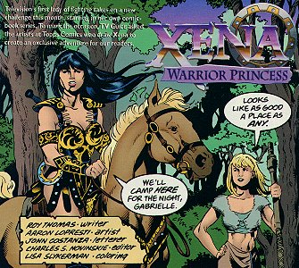
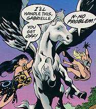
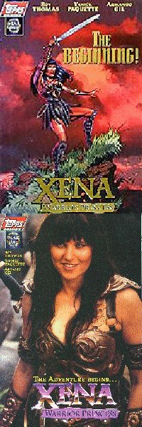
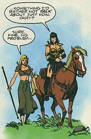
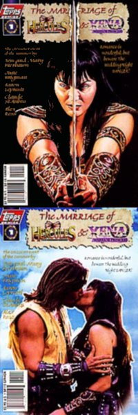

TV Guide August 9, 1997
Title: Xena: Warrior Princess
Date: August 1997
Pages: 5
Cover Price: $1.19
Writer: Roy Thomas
Art: Aaron Lopresti
Letter: John Constanza
Colors: Lisa Slykerman
Editor: Charles S Novinskie
OVERVIEW:
As Xena and Gabrielle are camping for the night, Gabrielle finds a horse caught in brambles. She frees it, only to discover it has wings. Xena takes over, taming the beast. She thinks she has a new steed when Bellerophon comes out of the bushes. Seems that the horse is the fabled Pegasus, and Bellerophon wants him back. Xena turns the errant horse over.
COMMENTS:

Short, strange, and funny.
Some people found subtext in this story, as they do in the show. If you want to see it, look at the text that is bold in the comic.
After a long absence, the Warrior Princess returns to the comics.
CONCLUSION:
Another one worth picking up if you can find it. Reprinted in the Xena: Trade Paperback.
Review Date: 4 Oct 1997 by Laura Gjovaag

Xena: Warrior Princess: Year One #1
Title: Plowshares Into Swords
Date: August 1997
Pages: 16 (10 pgs of story)
Cover Price: $3/$10
Writer: Roy Thomas
Pencils: Yanick Paquette
Inks: Armando Gil
Letters: John Workman
Colors: Digital Chameleon
Editor: Charles S Novinskie
Painted Cover: Yanick Paquette
Photo Cover: Unknown
NOTE: Xena: Warrior Princess created by Robert Tapert and John Schulian
OVERVIEW:
Xena kills a brigand in a fight, and is reminded of her start in fighting. She tells herself her origin story, from her mother being rescued by, and falling in love with, Nelo, a man from Sparta who claimed he was related to the King of Mycenae. Nelo leaves after several weeks, and returns once Cyrene has given birth to Xena. He helps raise Xena as a warrior, and left when she was very young, never to return.
A grown up Xena then fought off a warlord, and became a warlord herself. Only Hercules had swayed her from that dark path, and she swore to make up for all the evil she had done.
COMMENTS:

This is apparently an exclusive of American Entertainment. I have not seen it for sale elsewhere.
This has also been advertised as the TV Guide Special (there was an ad for it in the TV Guide in which the first Xena comic appears, but it was through American Entertainment).
Has two cover variations, one photo and one art. The photo cover is lower priced. The art cover is also referred to as the "Gold Logo" cover.
The story sort of contradicts the show in some ways. Not one of Roy Thomas' better efforts.
CONCLUSION:
Short and almost pointless. Not really worth it except for completist collectors or people completely unfamiliar with Xena, I'm afraid.
Review Date: 4 Oct 1997 by Laura Gjovaag

The Marriage of Xena and Hercules
Title: The Marriage of Hercules and Xena
Date: July 1998
Actual Release: 5 Aug 1998
Pages: 22
Cover Price: $2.95
Writer: Tom and Mary Bierbaum
Pencils: June Brigman, Aaron Lopresti
Inks: Claude St Aubin
Letters: John Workman
Colors: Digital Chameleon
Editor: Dwight Jon Zimmerman
Painted Cover: Alex Ross
Photo Cover: Unknown
NOTE: Xena: Warrior Princess created by Robert Tapert and John Schulian
OVERVIEW:
Hercules and Xena have just tied the knot. The audience includes all the pantheon of their friends and foes, including Ares, who seems a bit jealous. The High Priestess who performed the ceremony gives Xena a surprise kiss, and Xena falls under an enchantment. And on the honeymoon, Xena starts acting strange...
Gabrielle overhears two serving girls talking about a curse, and finds out that every wedding performed in the village for the last two years has ended with the bride brutally murdering her husband on the honeymoon. Gabrielle realizes that Hercules and Xena have gotten married only to determine what the curse is... and stop it.
Joxer overhears Ares talking about how he planned this as a trap, set to lure Xena back into his service. Joxer passes out before he can warn anyone.
Meanwhile, back on the honeymoon, Xena is about to kill a very drugged-with-wine Herc. But when Herc awakes, Xena isn't there. SHe's outside, barely controlling the urges. But the enchantment is growing stronger, and spreading to the horses, who bite Herc. He barely escapes, and falls off a cliff into the ocean.
But he knows he can't flee, or the enchantment will follow and Xena's new rage will be unleashed onto the outside world. So he begs Xena to let him choose how he will die. The two mount Pegasus, and fly into the heavens, where the flame of Hera's hate starts to flicker. Xena throws him off the flying horse, and Hera leaves Xena.
It was a plot by Hera to get revenge on Zeus, by killing Hercules. At the same time, Ares would get Xena back. Confronted with this, Ares flees, leaving the High Priestess, actually a Fury to make her own dramatic exit.
COMMENTS:
The cover by Alex Ross is worth the price of admission. The art is quite good throughout the book.
Quite a convoluted plan, actually. Hera uses a Fury to get brides to kill their husbands, attracting the attention of Herc and Xena. The Fury then goes into Xena, and has her kill Hercules, which has the double effect of getting rid of Herc for Hera, and making Xena hate herself, so Ares can influence her again.
CONCLUSION:
A fun but confused story. Would have been better with a second issue.
Review Date: 27 Nov 1998 by Laura Gjovaag